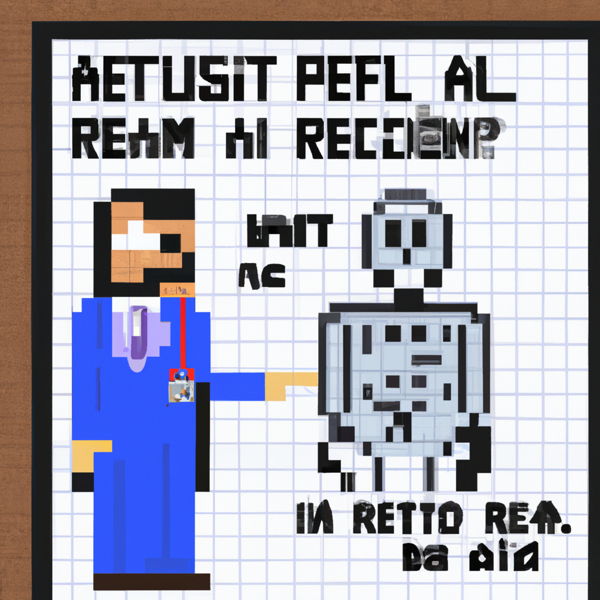

Why AI will never replace the radiologist
For years, the medical community has been talking about the potential of machine learning in radiology. In theory, it sounds like a great idea; machines could take over the tedious, mundane tasks that take up much of a radiologist's time, giving them more time to focus on more complex cases. However, there are some real challenges when it comes to machine learning in radiology.
First, the accuracy of machine learning algorithms is still not quite up to the standard of a radiologist. While the accuracy has improved significantly over the past few years, it is still not at the level where it can be trusted to make the same kind of diagnoses that a radiologist would.
Second, radiologists have more than just technical knowledge; they also have experience and intuition. Machines are not able to make the same kind of decisions based on experience and intuition. This is why, even if the accuracy of machine learning algorithms improves, radiologists will still be needed to provide the final diagnosis.
Finally, machine learning algorithms require a large amount of data to be trained on, and it's not always easy to get this data. Radiology is a very specialized field, and it is often difficult to find enough data to train the algorithms.
For these reasons, I believe that AI will never replace the radiologist. Machines can be great tools to assist radiologists, but they will never be able to replace them completely. Radiologists are still needed to provide the experience and intuition that machines lack.